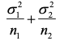

67 Experiments, RCT
TOC
- Misc
- Features
- Design
- Sources of Bias
- Change Scores Model
- Randomized Complete Block Design (RCBD)
Follow-up thread to Harrell’s RCT post
Misc
- Reasons for not running a RCT
- It’s just not technically feasible to have individual-level randomization of users as we would in a classical A/B test
- e.g. randomizing which individuals see a billboard ad is not possible
- We can randomize but expect interference between users assigned to different experiences, either through word-of-mouth, mass media, or even our own ranking systems; in short, the stable unit treatment value assumption (SUTVA) would be violated, biasing the results
- It’s just not technically feasible to have individual-level randomization of users as we would in a classical A/B test
- A gold-standard design is a 6-period 2-treatment randomized crossover study; the patient actually receives both treatments and her responses can be compared (Harrell)
- ATE for RCT:
- Non-theoretical ATE (i.e. calculated from actual data) is sample-averaged; population sampling weights are unavailable for RCT subject groups. So this ATE applies to a replication of the study with similar sampling patterns. ATE does not apply to the population and in fact may apply to no one due to lack of conditioning on patient characteristics. The ATE used in 99% of papers has nothing to do with population but uses only convenience sample weighting. Some papers even blatantly call it population-averaged.”
- “They test causal hypotheses about a group of patients with symptoms & other ‘diagnostic’ findings that form entry criteria for the RCT & may only be available in sufficient numbers in specialist centres.”
- Gelman
- “the drug works on some people and not others—or in some comorbidity scenarios and not others—we realize that “the treatment effect” in any given study will depend entirely on the patient mix. There is no underlying number representing the effect of the drug. Ideally one would like to know what sorts of patients the treatment would help, but in a clinical trial it is enough to show that there is some clear average effect. My point is that if we consider the treatment effect in the context of variation between patients, this can be the first step in a more grounded understanding of effect size.
- Gelman regarding a 0.1 ATE for a treatment in an education study
- “Actually, though, an effect of 0.1 GPA is a lot. One way to think about this is that it’s equivalent to a treatment that raises GPA by 1 point for 10% of people and has no effect on the other 90%. That’s a bit of an oversimplification, but the point is that this sort of intervention might well have little or no effect on most people. In education and other fields, we try lots of things to try to help students, with the understanding that any particular thing we try will not make a difference most of the time. If mindset intervention can make a difference for 10% of students, that’s a big deal. It would be naive to think that it would make a difference for everybody: after all, many students have a growth mindset already and won’t need to be told about it.
- “Maybe in some fields of medicine this is cleaner because you can really isolate the group of patients who will be helped by a particular treatment. But in social science this seems much harder.”
- Me: So, a 0.1 effect wouldn’t be large if there was no variation (i.e. same size effect for everyone), but that’s very unlikely to be the case.
- Calculation of standard-errors is different depending on the RCT type in order that variation within arms could be validly used to estimate variation between.
- Random Sampling vs Random Treatment Allocation (source)
- Random Sampling: licenses the use of measures of uncertainty for (sub)groups of sampled patients.
- Random Treatment Allocation: licenses the use of measures of uncertainty for the differences between the allocated groups.
- Re RCTs:
- licenses the use of measures of uncertainty for hazard ratios, odds ratios, risk ratios, median/mean survival difference, absolute risk reduction etc that measure differences between groups.
- Because there is no random sampling, measures of uncertainty are not licensed by the randomization procedure for cohort-specific estimates such as the median survival observed in each treatment cohort.
- For those, we can use descriptive measures such as standard deviation (SD), interquartile range etc. Measures of uncertainty will require further assumptions to be considered valid. Further discussion here”
- Re RCTs:
Features
- Three valuable design features of clinical trials are concurrent control, randomization and blinding.
- Blinding is weak at best without Randomization
- Randomization is impossible without Concurrent Control,
- Concurrent Control is necessary for the other two, so it can be regarded as the most important of the three.
- Blinding or Masking - patients are unaware of the treatment they are receiving and treating physicians are unaware of the treatment they are administering
- Prevents differential care during follow-up, accounts for nonspecific effects associated with receiving an intervention (placebo effects), may facilitate blinding of outcome assessors, and may improve adherence.
- Concurrent Control - the effect of a treatment should be assessed by comparing the results of subjects treated with the intervention being studied with the results of subjects treated concurrently (i.e. at the ‘same’ places at the ‘same’ times) with a control treatment, for example, placebo.
- In reality
- Re ‘same time’: the idea behind concurrent control is that the times at which they are recruited will vary randomly within treatment arms in the same way as between, so that variation in outcomes arising as a result of the former can be used to judge variation in outcomes as a result of the latter.
- Timing matters: The time at which a patient is recruited into the trial matters, but should not be biasing if patients are randomized throughout the trial to intervention and control. It will tend to increase the variance of the treatment effect, and rightly so, but it is a component that may be possible to eliminate (partially) by modelling a trend effect.
- Example: 1990s AIDS studies found survival of patients who were recruited later into trials tended to be better than those recruited earlier
- Timing matters: The time at which a patient is recruited into the trial matters, but should not be biasing if patients are randomized throughout the trial to intervention and control. It will tend to increase the variance of the treatment effect, and rightly so, but it is a component that may be possible to eliminate (partially) by modelling a trend effect.
- Re ‘same place’: The vast majority of randomised clinical trials are run in many centers. The variations in design around this many-centers aspect is the primary difference between various types of RCTs (see below). All the types will be regarded as employing concurrent control, but have their standard errors calculated differently.
- Re ‘same time’: the idea behind concurrent control is that the times at which they are recruited will vary randomly within treatment arms in the same way as between, so that variation in outcomes arising as a result of the former can be used to judge variation in outcomes as a result of the latter.
- Consequence of violations
- If variation from center to center is ignored and patients have not been randomized concurrently, then Fisher’s exact test, Pearson’s chi-square and Student’s t will underestimate the variation
- In reality
- Randomized assignment means that eligible units are randomly assigned to a treatment or comparison group. Each eligible unit has an equal chance of being selected. This tends to generate internally valid impact estimates under the weakest assumptions.
- Randomization also allows us to achieve statistical independence, which eliminates omitted variable bias. Statistical independence implies that the treatment variable is not correlated with the other variables. The key assumption is that randomization effectively produces two groups that are statistically identical with respect to observed and unobserved characteristics. In other words, the treatment group is the same as the control group on average.
- i.e. randomization process renders the experimental groups largely comparable. Thus, we can attribute any differences in the final metrics between the experimental groups to the intervention.
- In the absence of randomization, we might fall victim to this omitted variable bias because our treatment variable will probably be endogenous. That is, it will be probably correlated with other variables excluded from the model (omitted variable bias).
- Randomization also allows us to achieve statistical independence, which eliminates omitted variable bias. Statistical independence implies that the treatment variable is not correlated with the other variables. The key assumption is that randomization effectively produces two groups that are statistically identical with respect to observed and unobserved characteristics. In other words, the treatment group is the same as the control group on average.
Design
- Misc
- In-Trial Follow-Up (ITFU)
- Without ITFU, the unbiased ascertainment of outcomes may be compromised and statistical power considerably reduced
- Strategies
- Face-to-face follow-up is widely used during the initial “in-trial” period, but is costly if employed longer term.
- Telephone-based approaches are more practical, with the ability to contact many participants coordinated by a central trial office
- Postal follow-up has been shown to be effective.
- Web-based techniques may become more widespread as technological advances develop.
- Post-Trial Follow-Up (PTFU)
- RCTs are costly and usually involve a relatively brief treatment period with limited follow-up. A treatment response restricted to this brief “in-trial” period can potentially underestimate the long-term benefits of treatment and also may fail to detect delayed hazards.
- Strategies
- See ITFU strategies
- Use of routine health records can provide detailed information relatively inexpensively, but the availability of such data and rules governing access to it varies across countries.
- In-Trial Follow-Up (ITFU)
- Randomization
- Individual Randomization - the individual or patient that is allocated to an intervention (may be more than one intervention group) or control group, and simple statistical analyses on participant outcomes are used to evaluate if the intervention was effective.
- These analyses assume that all participants are completely independent (ie. unlike each other, do not influence each other, and any outcomes measured on them are influenced by the intervention or usual care in the same way)
- Cluster Randomization - is one in which intact social units, or clusters of individuals rather than individuals themselves, are randomized to different intervention groups
- All participants recruited from the practice, school or workplace are allocated to either the intervention or the control group
- The outcomes of the intervention are still measured at the individual level, but the level at which the comparison is made is the practice, school or workplace
- Advantages
- Members from intervention and control groups are less likely to have direct contact with each other and are less likely to pass on components of the intervention to the control group. (i.e. contamination)
- There may also be increased compliance due to group participation.
- Clusters typically consistent in their management.
- Individual Randomization - the individual or patient that is allocated to an intervention (may be more than one intervention group) or control group, and simple statistical analyses on participant outcomes are used to evaluate if the intervention was effective.
- Treatment Strategy
- Parallel Group - subjects are randomized to one or more study arms (aka treatment groups) and each study arm will be allocated a different intervention. After randomization each participant will stay in their assigned treatment arm for the duration of the study
- Think this is just typical randomization into treatment/control groups but can be extended to include multiple treatment arms.
- “change from baseline” (aka change scores) should never be the outcome variable
- Central Question: For two patients with the same pre measurement value of x, one given treatment A and the other treatment B, will the patients tend to have different post-treatment values of y?
- Crossover Group - subjects are randomly allocated to study arms where each arm consists of a sequence of two or more treatments given consecutively.
- i.e. each subject receives more than one treatment and each treatment occurs sequentially over the duration of the study.
- Example: AB/BA study - Subjects allocated to the AB study arm receive treatment A first, followed by treatment B, and vice versa in the BA arm.
- Allows the response of a subject to treatment A to be contrasted with the same subject’s response to treatment B.
- Removing patient variation in this way makes crossover trials potentially more efficient than similar sized, parallel group trials in which each subject is exposed to only one treatment.
- In theory treatment effects can be estimated with greater precision given the same number of subjects.
- Misc
- Best practice is to avoid this design if there is a reasonable chance of Carry Over
- Also see
- Senn SJ. Cross-over trials in clinical research. Chichester: John Wiley; 1993.
- “readable approach to the problems of designing and analysing crossover trials”
- Senn SJ. Cross-over trials in clinical research. Chichester: John Wiley; 1993.
- Issue: Carry Over
- Effects of one treatment may “carry over” and alter the response to subsequent treatments.
- (Pre-experiment) Solution: introduce a washout (no treatment) period between consecutive treatments which is long enough to allow the effects of a treatment to wear off.
- A variation is to restrict outcome measurement to the latter part of each treatment period. Investigators then need to understand the likely duration of action of a given treatment and its potential for interaction with other treatments.
- Testing for Carry Over
- If carry over is present the outcome on a given treatment will vary according to its position in the sequence of treatments.
- Example: Concluding that there was no carry over when an analysis of variance found no statistically significant interaction between treatment sequence and outcome.1
- However such tests have limited power and cannot rule out a type II error (wrongly concluding there is no carry over effect).
- (Post-experiment) Solution: If Carry Over is detected:
- Option 1: Treat the study as though it were a parallel group trial and confine analysis to the first period alone.
- The advantages of the crossover are lost, with the wasted expense of discarding the data from the second period.
- More importantly, the significance test comparing the first periods may be invalid
- Option 2 (applicable only to studies with at least three treatment periods, e.g. ABB/BAA)
- Model the carry over effect and use it to adjust the treatment estimate.
- Such approaches, while statistically elegant, are based on assumptions which can rarely be justified in practice.
- See Senn paper above
- Option 1: Treat the study as though it were a parallel group trial and confine analysis to the first period alone.
- Blocked Randomization - at any given point in the trial we restrict the degree of “imbalance” between the groups to half of the block size
- Imbalance leads to a loss of power
- In an open-label study, a small fixed block size would make it possible for the study staff to predict what the next allocation is.
- Solution: Use variable block sizes, which retain some of the protection of balanced group size while making it harder for the study staff to tell where they are in a given block or where one block ends and another begins
- Twitter thread presenting an example of the procedure for a block randomized RCT
- Balance - balanced allocations are more efficient in that they lead to lower variances
- Variance of the Mean difference (e.g between treatment and control groups) for unbalanced design
- Parallel Group - subjects are randomized to one or more study arms (aka treatment groups) and each study arm will be allocated a different intervention. After randomization each participant will stay in their assigned treatment arm for the duration of the study
- Randomized designs are classified as completely randomized design, complete block design, randomized block design, Latin square design, split pot design, cross over design, family block design, stepped-wedge cluster design, etc.
- Completely Randomized Parallel Group trial - any given center will have some patients randomly allocated to intervention and some to control. Randomization includes centers (i.e. a patient is randomly selected either treatment/control and which center they will receive the treatment)
- Parallel Group Blocked by Center - Randomization happens within each center (i.e. each center handles their own randomization). Treatment/Control ratio is the same for each center.
- “Center” should be included as a variable in the model.
- Parallel Group Blocked by Center - Randomization happens within each center (i.e. each center handles their own randomization). Treatment/Control ratio is the same for each center.
- Cluster-Randomized trial - randomly allocate some centers to dispense the intervention and some the control
- Fundamental unit of inference becomes the center and patients are regarded as repeated measures on it
- Completely Randomized Parallel Group trial - any given center will have some patients randomly allocated to intervention and some to control. Randomization includes centers (i.e. a patient is randomly selected either treatment/control and which center they will receive the treatment)
Examples- The effects of a leading mindfulness meditation app (Headspace) on mental health, productivity, and decision-making (Paper)
- RCT with 2,384 US adults recruited via social media ads.
- Four-week experiment
- first group is given free access to the app (worth $13)
- second group receives, in addition, a $10 incentive to use the app at least four or ten separate days during the first two weeks
- third group serves as a (waitlist) control group
- The effects of a leading mindfulness meditation app (Headspace) on mental health, productivity, and decision-making (Paper)
Sources of Bias
Misc
Notes from
* [Biases in randomized trials: a conversation between trialists and epidemiologists](https://www.ncbi.nlm.nih.gov/pmc/articles/PMC5130591/)
Selection bias **_-_** occurs when there are systematic differences between baseline characteristics of groups.
* If the assignment that was not properly randomized or the randomized assignment was not sufficiently concealed (i.e. allocation concealment), and so the person enrolling participants was aware of allocation sequence and influenced which patients were assigned to each group based on their prognostic factors
Example: if groups are not comparable on key demographic factors, then between-group differences in treatment outcomes cannot necessarily be attributed solely to the study intervention.
Example: The assignment of patients to a group is influenced by knowledge of which treatment they will receive
Solutions:
Randomized Assignment - RCTs attempt to address selection bias by randomly assigning participants to groups – but it is still important to assess whether randomization was done well enough to eliminate the influence of confounding variables.
Blinding - participants and investigators should remain unaware of which group participants are assigned to.
Performance bias **_-_** refers to systematic differences between groups that occur during the study. Leads to overestimated treatment effects, because of the physical component of interventions
Example: if participants know that they are in the active treatment rather than the control condition, this could create positive expectations that have an impact on treatment outcome beyond that of the intervention itself.
Solution: Blinding - participants and investigators should remain unaware of which group participants are assigned to.
More easily achieved in medication trials than in surgical trials
Detection bias **_\-_** refers to systematic differences in the way outcomes are determined.
Example: if providers in a psychotherapy trial are aware of the investigators' hypotheses, this knowledge could unconsciously influence the way they rate participants' progress.
Solution: Attention to conflicts of interest and Blinding (also see Performance Bias) - RCTs address this by utilizing independent outcome assessors who are blind to participants' assigned treatment groups and investigators' expectations.
Attrition bias **_-_** occurs when there are systematic differences between groups in withdrawals from a study.
It's common for participants to drop out of a trial before or in the middle of treatment, and researchers who only include those who completed the protocol in their final analyses are not presenting the full picture.
Solution: Intention to Treat analysis - Analyses should include all participants who were randomized into the study, and not only participants who completed some or all of the intervention.
Reporting bias **_-_** refers to systematic differences between reported and unreported data.
Example: publication bias - occurs because studies with positive results are more likely to be published, and tend to be published more quickly, than studies with findings supporting the null hypothesis.
Example: outcome reporting bias - occurs when researchers only write about study outcomes that were in line with their hypotheses.
Solution: Requirements that RCT protocols be published in journals or on trial registry websites, which allows for confirmation that all primary outcomes are reported in study publications.
Other bias **_-_** is a catch-all category that includes specific situations not covered by the above domains.
Includes bias that can occur when study interventions are not delivered with fidelity, or when there is "contamination" between experimental and control interventions within a study (for example, participants in different treatment conditions discussing the interventions they are receiving with each other).
Change Score Models
- Change Scores - subtract the baseline value of the outcome from the value measured at the end of the study and use that difference for your statistical tests or models.
- Misc
- see tutorial, https://github.com/CRFCSDAU/EH6126_data_analysis_tutorials/blob/master/Unit_1_Review/Change_scores/Change_scores.md
- Reason: Randomization of participants will result in groups (e.g. treated/control) that are comparable “on average” over many hypothetical trials, at the end of the day, we just have the one trial that we actually ran. And for that one trial there really could be important differences between the groups at baseline that could lead to errors of inference (e.g. concluding the treatment is beneficial when it isn’t).
- Example: a trial for a blood pressure medication that we hope will lower patients’ SBP values. So we set up the trial, recruit some patients and randomize them into two groups. Then we give one group the new medication we are testing, and the other gets standard-of-care. At the end of the study we compare the mean blood pressure of the two groups and find that the active group had a SBP that was 3 mmHg lower, on average, than the values seen in the control group. We might thus conclude that the treatment worked. However, what if it just so happened that the active group also had a similarly lower mean blood pressure (vs the other group) measured at baseline, before the intervention?
- Example: Change Score Model
.png)
w1 <- glm(
data = dw,
family = gaussian,
(post - pre) ~ 1 + tx)- Specification
- Where
- post, pre are pre-treatment, post-treatment measurements of the outcome variable
- tx is the treatment indicator variable
- β0: population mean for the change in the control group
- easier to interpret if “pre” is mean centered
- β1: parameter is the population level difference in pre/post change in the treatment group, compared to the control group.
- Also a causal estimate for the average treatment effect (ATE) in the population, τ
- Where
``
Randomized Complete Block Design (RCBD)
- notes from https://www.r-bloggers.com/2020/12/accounting-for-the-experimental-design-in-linear-nonlinear-regression-analyses/
- The defining feature is that each block sees each treatment exactly once
- Running a linear regression analysis without taking into account the correlation within blocks
- Any block-to-block variability goes into the residual error term, which is, therefore, inflated.
- Taking the mea
- Advantages
- Generally more precise than the completely randomized design (CRD).
- No restriction on the number of treatments or replicates.
- Some treatments may be replicated more times than others.
- Missing plots are easily estimated.
- Disadvantages
- Error degrees of freedom is smaller than that for the CRD (problem with a small number of treatments).
- Large variation between experimental units within a block may result in a large error term
- If there are missing data, a RCBD experiment may be less efficient than a CRD
- Steps
- Choose the number of blocks (minimum 2) – e.g. 4
- The number of blocks is the number of “replications”
- Choose treatments (assign numbers or letters for each) – e.g. 6 trt – A,B, C, D, E, F
- Treatments are assigned at random within blocks of adjacent subjects, each treatment once per block.
- Any treatment can be adjacent to any other treatment, but not to the same treatment within the block
- Randomize the treatments and blocks
- Example
- Choose the number of blocks (minimum 2) – e.g. 4
Obs block trt
1 2 B
2 2 C
3 2 A
4 2 D
5 2 E
6 2 F
7 1 B
8 1 C
9 1 E
10 1 A
11 1 F
12 1 D
13 3 D
14 3 A
15 3 C
16 3 F
17 3 B
18 3 E
19 4 A
20 4 F
21 4 B
22 4 C
23 4 D
24 4 E- Fitting a linear model (eda: check scatterplot of outcome vs treatment)
- do not model with block as a fixed effect
mod.reg <- lm(yield ~ block + density, data=dataset)assumes that the blocks produce an effect only on the intercept of the regression line, while the slope is unaffected
do model with block as a random effect (i.e. block effect may produce random fluctuations for both model parameters, intercept and slope)
modMix.1 <- lme(yield ~ density, random = ~ density|block, data=dataset)
# or equivalently
modMix.1 <- lme(yield ~ density, random = list(block = pdSymm(~density)), data=dataset)
## Linear mixed-effects model fit by REML
## Data: dataset
## AIC BIC logLik
## 340.9166 355.0569 -164.4583
##
## Random effects:
## Formula: ~density | block
## Structure: General positive-definite, Log-Cholesky parametrization
## StdDev Corr
## (Intercept) 3.16871858 (Intr)
## density 0.02255249 0.09
## Residual 1.38891957
##
## Fixed effects: yield ~ density
## Value Std.Error DF t-value p-value
## (Intercept) 31.78987 1.0370844 69 30.65311 0
## density -0.26744 0.0096629 69 -27.67704 0
## Correlation:
## (Intr)
## density -0.078
##
## Standardized Within-Group Residuals:
## Min Q1 Med Q3 Max
## -1.9923722 -0.5657555 -0.1997103 0.4961675 2.6699060
##
## Number of Observations: 80
## Number of Groups: 10- If there is NOT a strong correlation between the slope (e.g. listed above as corr = 0.09 for density) and intercept (i.e. correlated random effects) in the Random Effects section of summary(modMix.1), try modeling with the random effects as independent
modMix.2 <- lme(yield ~ density, random = list(block = pdDiag(~density)), data=dataset)- ‘pdDiag’ specifies a var-covar diagonal matrix, where covariances (off-diagonal terms) are constrained to 0
- check if the change made a significant difference (i.e. pval < 0.05)
anova(modMix.1, modMix.2)- Other options include: either random intercept or random slope
# Model with only random intercept
modMix.3 <- lme(yield ~ density, random = list(block = ~1), data=dataset)
# Alternative notation
# random = ~ 1|block
# Model with only random slope
modMix.4 <- lme(yield ~ density, random = list(block = ~ density - 1), data=dataset)
# Alternative notation
# random = ~density - 1 | block- Fitting a nonlinear model
library(aomisc)
datasetG <- groupedData(yieldLoss ~ 1|block, dataset)
nlin.mix <- nlme(yieldLoss ~ NLS.YL(density, i, A), data=datasetG,
fixed = list(i ~ 1, A ~ 1),
random = i + A ~ 1|block)
# or equivalently
nlin.mix2 <- nlme(yieldLoss ~ NLS.YL(density, i, A), data=datasetG,
fixed = list(i ~ 1, A ~ 1),
random = pdSymm(list(i ~ 1, A ~ 1)))
## Nonlinear mixed-effects model fit by maximum likelihood
## Model: yieldLoss ~ NLS.YL(density, i, A)
## Data: datasetG
## AIC BIC logLik
## 474.8225 491.5475 -231.4113
##
## Random effects:
## Formula: list(i ~ 1, A ~ 1)
## Level: block
## Structure: General positive-definite
## StdDev Corr
## i 0.1112839 i
## A 4.0466971 0.194
## Residual 1.4142009
##
## Fixed effects: list(i ~ 1, A ~ 1)
## Value Std.Error DF t-value p-value
## i 1.23242 0.038225 104 32.24107 0
## A 68.52068 1.945173 104 35.22600 0
## Correlation:
## i
## A -0.409
##
## Standardized Within-Group Residuals:
## Min Q1 Med Q3 Max
## -2.4414051 -0.7049356 -0.1805322 0.3385275 2.8787362
##
## Number of Observations: 120
## Number of Groups: 15- Exclude correlation between random effects (0.194 above) if not substantial for a simpler model
nlin.mix3 <- nlme(yieldLoss ~ NLS.YL(density, i, A), data=datasetG,
fixed = list(i ~ 1, A ~ 1),
random = pdDiag(list(i ~ 1, A ~ 1)))